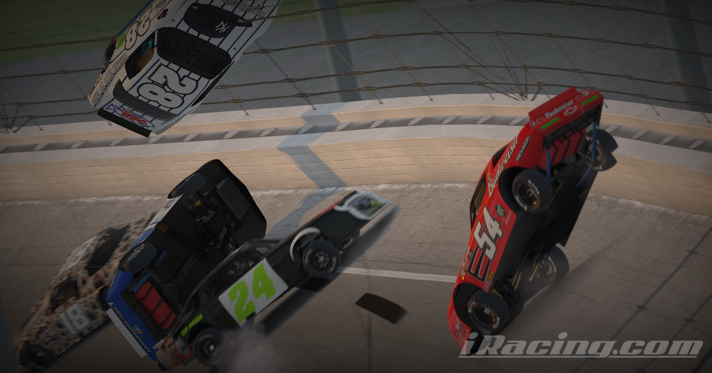
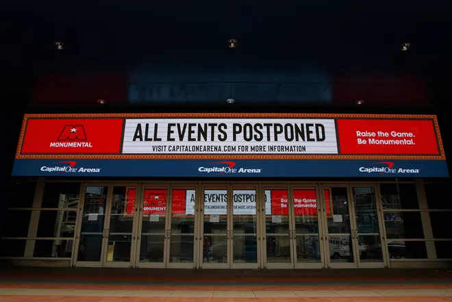
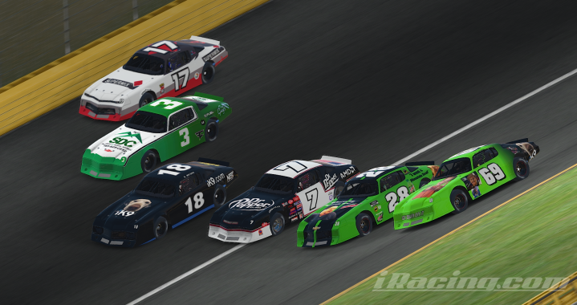

The Instagram Quarantine Street Stock Series
A historical overview by Charlie Baier

"There's something so beautiful about the chaos."
This story begins in the days of March 10-13th of 2020.
At that point of time we were living in a world of uncertainty, anxiousness and fear.
All major sports organizations, including the NBA, NHL, NFL, F1, MLB, NCAA and NASCAR announced their postponement for their oncoming or current seasons amidst the looming Covid-19 Virus.
At this point as well, nearly every single school district in the country planned a 2-week shutdown for the same reason. A decision that would shift the world forever.
Buried deep in the crowd of uncertain Americans were the Instagram Buds, a group of friends who found each other on the internet and bonded over NASCAR. However, when we were met with an early offseason of all motorsports, our main source of enjoyment was ripped directly out of our hands.

March 11th, 2020
The world scattered to for solutions to pass the time.
During this period, a handful of the Instagram Buds were routinely active on the iRacing.com platform. These names included Kenneth Bueno, Jack D'Andrea, Shane DiMantova, Charlie Baier, Blaze McKinney and Glen Bundren
In the weeks beforehand, other members such as Kelan Belsha, JJ Hill, and Eli Commerford had picked up the platform as well.
An idea quickly sparked in the heads of this group.
In chat logs that are lost in the archives of Instagram today, the group, without hesisation, agreed to host a 55-lap Saturday night showdown at the virtual Charlotte Motor Speedway.
To make the event even more of a spectacle, all drivers agreed to make custom paint schemes for the event, and they would reveal them in the group chat the night beforehand.

Pictured: Kenneth Bueno #17, Eli Commerford #3, Kelan Belsha #18, Charlie Baier #7, Jack D'Andrea #28, Shane DiMantova #69

A fun and late Saturday night of racing concluded with Kenneth Bueno taking victory. Charlie Baier followed close behind
This would be the start of it all. We didn't know it at the time, but that night birthed one of the most iconic iRacing leagues within our group of friends.